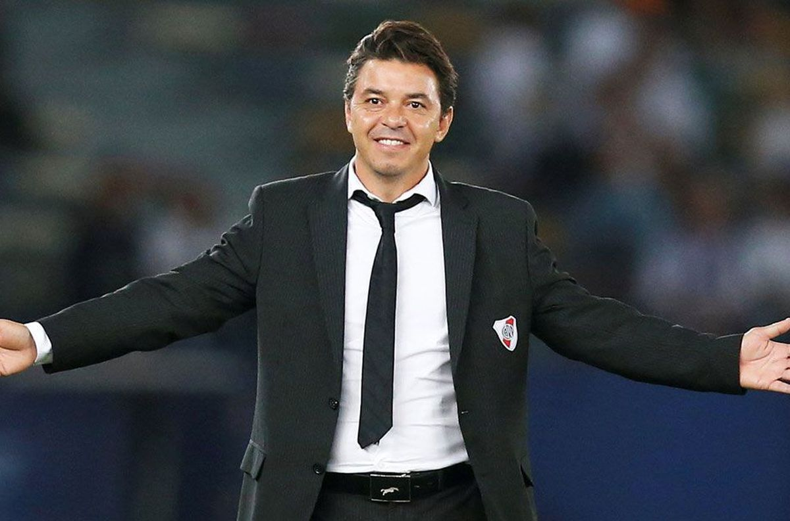

Marcelo Gallardo
Exfutbolista y Entrenador Argentino
Biografia
Marcelo Daniel Gallardo (Merlo, 18 de enero de 1976).Es conocido como "El Muñeco". Actualmente dirige al Club Atlético River Plate de la Primera División de Argentina hasta el 31 de diciembre de 2022, fecha que finaliza su contrato.
Trofeos obtuvidos con el Club Atletico River Plate
- 2014 - Copa Total Sudamericana
- 2015 - Copa Libertadores
- 2015 - Recopa Sudamericana
- 2015 - Suruga Bank
- 2016 - Copa Argentina
- 2016 - Recopa Sudamericana
- 2017 - Copa Argentina
- 2018 - Super Copa Argetina
- 2018 - Copa Libertadores
- 2019 - Copa Argentina
- 2019 - Supercopa Argentina
- 2019 - Recopa Sudamericana
- 2021 - Campeonato de Primera Division
- 2021 - Torneo de Campeones de la Liga Profesional